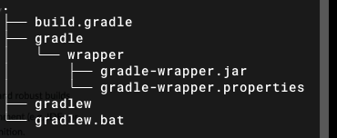

1 开始
安装
去官网下载, 然后配置环境变量。
1 | export GRADLE_HOME = $baseDir/gradle |
基本概念
每一个构建都是由一个或多个 projects 构成的；每一个 project 是由一个或多个 tasks 构成的. 一个 task 代表一些更加细化的构建. 可能是编译一些 classes, 创建一个 JAR, 生成 javadoc, 或者生成某个目录的压缩文件。
在每个gradle的project的项目的根目录下都有一个build.gradle文件，称为构建脚本。使用gradle进行项目的构建的时候就是根据该文件进行构建。
简单的demo
- 创建
build.gradle文件，输入如下的内容：1
2
3
4
5task hello { // 定义一个task，叫做hello
doLast {
println "hello world"
}
} - 执行命令
gradle hello: 执行叫做hello的task; 如果不想输入gradle的日志可以使用参数gradle -q hello
task之间的依赖关系
可以声明task之间的依赖关系：
1 | task hello << { |
wrapper
wrapper：将project和具体的gradle版本进行绑定.
- 在项目目录下运行
gradle wrapper, 之后会生成如下
 - 将项目拷贝到到其他的项目之后，可以直接使用
./gradlew命令来进行项目的构建- 该命令会下载需要的gradle版本，下载到
~/.gradle/wrapper/dists目录下
- 该命令会下载需要的gradle版本，下载到
daemo
可以理解成gradle的服务端，执行gradle命令的时候，是创建一个client，然后client将命令发送给daemo，执行完命令之后client会销毁，但是daemo存才，下一次执行的时候还可以直接使用。
2 使用gradle构建项目
gradle可以用来构建不同语言开发的project，gradle对project的构建是通过插件实现的。例如：使用java插件来构建java项目。
使用gradle构建java项目-demo
gradle默认在 src/main/java 目录下寻找到你的正式（生产）源码, 在 src/test/java 目录下寻找到你的测试源码, 并在src/main/resources目录下寻找到你准备打包进jar的资源文件。测试代码会被加入到环境变量中设置的目录里运行。所有的输出文件都会被创建在构建目录里, 生成的JAR文件会被存放在 build/libs 目录下
1 | apply plugin: 'java' // 将java插件加入到项目中 |
- 查看project项目中的tasks：
gradle tasks